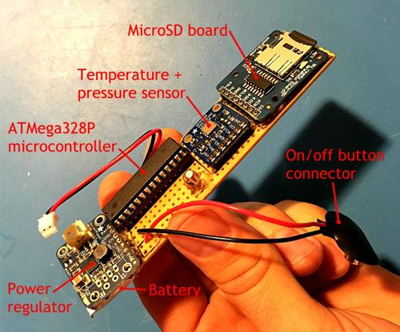
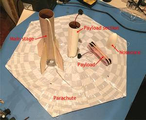
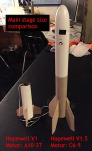
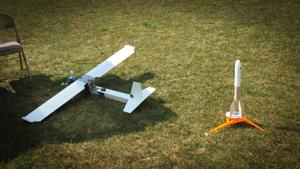

My love for rockets and space travel has gone back for as long as I can remember, evidenced by this semi-embarrassing photo of me on a family vacation to the Kennedy Space Center in the early 90’s. I’m old enough now though that I can focus that love onto projects with tangible outcomes, if not useful applications; projects like rovers and model rockets – complete with actual scientific instruments! Who doesn’t like blasting off model rockets?!
The Hopewell V1.5 is my second attempt at a custom model rocket with an electronic payload I designed and built. My first attempt, the Hopewell V1, was… a good learning experience anyway… (it crashed). The Hopewell V1.5 is a slightly improved version with a bigger engine and better power supply circuitry.
The rocket is constructed out of two store-bought model rocket kits modded and spliced together with a custom electronics payload that logs temperature and pressure data. These data can then be used to determine the rocket’s altitude. The idea was to turn on the data logger, launch and recover the rocket, and retrieve the log file from the MicroSD card.


The science payload is built with a Lithium Ion Polymer Battery (3.7v 150mAh) and a ‘5V PowerBoost 500‘ as the power source, exterior-mounted power button, clock circuit, BMP085 temperature/pressure sensor, MicroSD card breakout board, and an ATMega328P microcontroller placed in perfboard and soldered and wire wrapped. The microcontroller is from an Arduino Uno and programmed with open-source and custom software. The code is written so that a temperature and pressure reading is taken four times every second and written to a simple csv text document on the MicroSD card.
Since the Hopewell V1 was powered with a tiny A10-3T motor, it only traveled about 16 meters into the air. For the Hopewell V1.5, I used a bigger main stage powered by a C6-5 motor. The maximum altitude the Hopewell V1.5 reached was 140 meters (see below). *NOTE: No flight data for Flight 1


OK, for the best part… my cousin Andy, being the genius he is, built his own remote controlled airplane out of what is essentially some packing foam, and some relatively cheap, off-the-shelf electronic parts. Not only does this plane fly (and fly well!), it comes equipped with two cameras (one for HD video and the other for a remote heads-up display!), as well as an automatic GPS system which can log the plane’s flight AND enable the plane to fly to pre-programmed locations via google maps; draw where you want it to go and it goes there… Did I mention it has a heads-up display? I did? Well, you’d sound more excited if you put the goggles on yourself and witnessed firsthand the live, onboard video feed overlaid with real-time altitude and heading data and artificial horizon! So, so awesome…
Lucky for me, he happened to be flying his plane the same day I was going to launch my rocket! OK, we planned it… but the result was some great video footage! (Some of the details are hard to see so I recommend blowing it up to full screen.) Check it out: